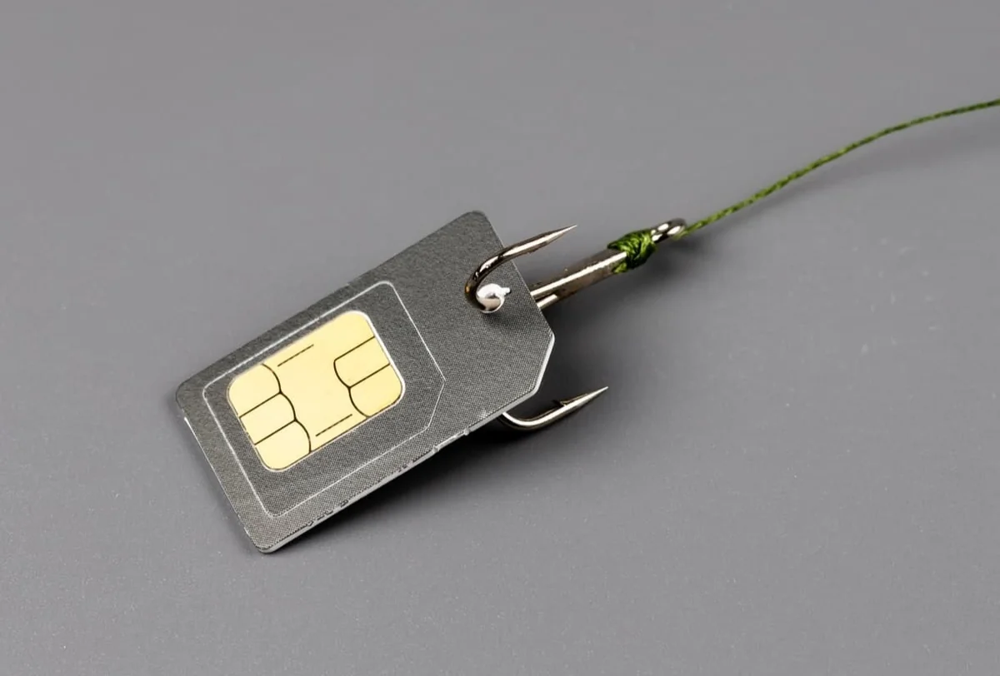

Most anyone reading this article will have a pretty good idea of the purpose of a SIM card in a mobile phone, so we won’t dig into that aspect too deeply. Summarily, a SIM or Subscriber Identity Module is the tiny portable media chip that stores the necessary information, including the phone number, for a mobile phone to connect to a carrier network. That is important because it allows the detaching of a mobile number from a specific physical device.
SIM swapping (aka SIM jacking; SIM hijacking; simjacking; port-out scam; digital SIM swap; SIM splitting) is when a malicious third party / threat actor (TA) convinces your carrier to swap the SIM card to which a mobile phone number is bound.
It's a simple and straightforward process to link a number to a new SIM, requiring just a small number of steps including providing a SIM ID to the carrier agent either online or over the phone. For new numbers the validation can be less stringent; however, there are supposed to be sound protection measures in place to prevent someone other than the owner of the number from registering the number to a new SIM. Herein lies the challenge and issue. These measures can be bypassed and will allow those with nefarious intentions to gain access to your number. This is primarily accomplished in two manners.
Social Engineering
Professional TAs that have a targeted number in mind will begin their efforts by conducting a thorough open-source intelligence (OSINT) campaign. If you are unfamiliar with the concept of OSINT, take a minute to read “Is your Organization Vulnerable to OSINT?” blog for a bit of a deeper dive. Once the TAs have collected enough publicly available personal data such as your birthdate, addresses, hobbies, spouse, parents, etc., they will contact the carrier and impersonate the targeted individual.
They then convince the carrier to activate a new SIM for your number through stories of lost, stolen, or destroyed phones, armed with a number of personal details and on a Friday afternoon when the phone agent is just ready to get off work and go home — unfortunately, it’s not as difficult as one may hope.
Insider Threat
The other primary manner in which SIM swapping occurs is through Insider Threat as seen in the example to the right. The chance of Insider Threat can be mitigated to some degree through process and precaution, but due to the nature of Insider Threat, it can never truly be eliminated. Employees or trusted vendors can be directly targeted or can be lured in through online forums. In either case, once the TA has one or more insiders in place, the likelihood of a successful swap attack is quite high. Insider Threat is another challenge we are tackling with our upcoming two-party-integrity authorization component. More on that to come. For now, suffice it to say, the more people have access to the mechanisms securing an account, the higher the likelihood of a successful compromise is. Mobile carriers have very large workforces with any number of individuals being able to singularly compromise an account, leading to a high degree of risk.
What’s at Stake?
Any accounts that are protected with an SMS-based OTP are susceptible to SIM hijacking, and this means anything protected by this mechanism is at risk as well. Everything from social media accounts, including their powerful OAuth Tokens, to banking and financial accounts. Once the TA takes ownership of your number, they can summarily attack the accounts directly by using the SMS OTP to gain access or indirectly by abusing the password reset mechanism that is often tied to the SMS OTP. These attacks can quickly escalate and become quite difficult to recover from as they branch from account to account collecting more data.
How does NoPass™ Prevent SIM Swapping?
NoPass is not vulnerable to SIM swapping, because it is not tied to a phone number. NoPass™ is based on a push that is tied into the isolated NoPass™ application which is key paired to unique NoPass™ Server instance. The private key is safely de-centrally stored in your mobile device’s secure trusted environment and protected with your biometric, and the communication between the NoPass™ application and server is protected by our patented Full Duplex Authentication® (FDA).